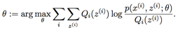
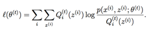
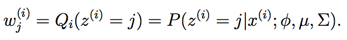
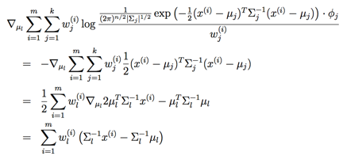
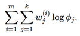
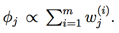
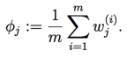

CS229
Lecture notes
翻译：CycleUser
Part IX
期望最大化算法(EM algorithm)
在前面的若干讲义中，我们已经讲过了期望最大化算法（EM algorithm），使用场景是对一个高斯混合模型进行拟合（fitting a mixture of Gaussians）。在本章里面，我们要给出期望最大化算法（EM algorithm）的更广泛应用，并且演示如何应用于一个大系列的具有潜在变量（latent variables）的估计问题（estimation problems）。我们的讨论从 Jensen 不等式（Jensen’s inequality）开始，这是一个非常有用的结论。
1 Jensen 不等式（Jensen’s inequality）
设 f 为一个函数，其定义域（domain）为整个实数域（set of real numbers）。这里要回忆一下，如果函数 f 的二阶导数 f′′(x) ≥ 0 (其中的 x ∈ R)，则函数 f 为一个凸函数（convex function）。如果输入的为向量变量，那么这个函数就泛化了，这时候该函数的海森矩阵（hessian） H 就是一个半正定矩阵（positive semi-definite H ≥ 0）。如果对于所有的 x ，都有二阶导数 f′′(x) > 0，那么我们称这个函数 f 是严格凸函数（对应向量值作为变量的情况，对应的条件就是海森矩阵必须为正定，写作 H > 0）。这样就可以用如下方式来表述 Jensen 不等式：
定理（Theorem）：设 f 是一个凸函数，且设 X 是一个随机变量（random variable）。然后则有：
E[f(X)] ≥ f(EX).
（译者注：函数的期望等于期望的函数值）
此外，如果函数 f 是严格凸函数，那么 E[f(X)] = f(EX) 当且仅当 X = E[X] 的概率（probability）为 1的时候成立（例如 X 是一个常数。）
还记得我们之前的约定（convention）吧，写期望（expectations）的时候可以偶尔去掉括号（parentheses），所以在上面的定理中， f(EX) = f(E[X])。
为了容易理解这个定理，可以参考下面的图：

上图中，f 是一个凸函数，在图中用实线表示。另外 X 是一个随机变量，有 0.5 的概率（chance）取值为 a，另外有 0.5 的概率取值为 b（在图中 x 轴上标出了）。这样， X 的期望值就在图中所示的 a 和 b 的中点位置。
图中在 y 轴上也标出了 f(a), f(b) 和 f(E[X])。接下来函数的期望值 E[f(X)] 在 y 轴上就处于 f(a) 和 f(b) 之间的中点的位置。如图中所示，在这个例子中由于 f 是凸函数，很明显 E[f(X)] ≥ f(EX)。
顺便说一下，很多人都记不住不等式的方向，所以就不妨用画图来记住，这是很好的方法，还可以通过图像很快来找到答案。
备注。回想一下，当且仅当 –f 是严格凸函数（[strictly] convex）的时候，f 是严格凹函数（[strictly] concave）（例如，二阶导数 f′′(x) ≤ 0 或者其海森矩阵 H ≤ 0）。Jensen 不等式也适用于凹函数（concave）f，但不等式的方向要反过来，也就是对于凹函数，E[f(X)] ≤ f(EX)。
2 期望最大化算法（EM algorithm）
假如我们有一个估计问题（estimation
problem），其中由训练样本集 {x(1), ..., x(m)} 包含了 m 个独立样本。我们用模型 p(x, z) 对数据进行建模，拟合其参数（parameters），其中的似然函数（likelihood）如下所示：

然而，确切地找到对参数 θ
的最大似然估计（maximum likelihood
estimates）可能会很难。此处的 z(i) 是一个潜在的随机变量（latent random variables）；通常情况下，如果 z(i) 事先得到了，然后再进行最大似然估计，就容易多了。
这种环境下，使用期望最大化算法（EM algorithm）就能很有效地实现最大似然估计（maximum likelihood estimation）。明确地对似然函数进行最大化可能是很困难的，所以我们的策略就是使用一种替代，在 E 步骤 构建一个 l 的下限（lower-bound），然后在 M 步骤 对这个下限进行优化。
对于每个 i，设 Qi 是某个对 z 的分布，Qi(z) = 1, Qi(z) ≥ 0。则有下列各式1：

上面推导（derivation）的最后一步使用了 Jensen 不等式（Jensen’s inequality）。其中的 f(x) = log x 是一个凹函数（concave function），因为其二阶导数 f′′(x) = −1/x2 < 0 在整个定义域（domain） x ∈ R+ 上都成立。
此外，上式的求和中的单项：

是变量（quantity）p(x(i), z(i); θ)/Qi(z(i)) 基于 z(i) 的期望，其中 z(i) 是根据 Qi 给定的分布确定。然后利用
Jensen 不等式（Jensen’s
inequality），就得到了：

其中上面的角标 “z(i) ∼ Qi” 就表明这个期望是对于依据分布 Qi 来确定的 z(i) 的。这样就可以从等式 (2)
推导出等式 (3)。
接下来，对于任意的一个分布 Qi，上面的等式(3) 就给出了似然函数 l(θ) 的下限（lower-bound）。那么对于 Qi 有很多种选择。咱们该选哪个呢？如果我们对参数 θ 有某种当前的估计，很自然就可以设置这个下限为 θ 这个值。也就是，针对当前的 θ 值，我们令上面的不等式中的符号为等号。（稍后我们能看到，这样就能证明，随着 EM迭代过程的进行，似然函数 l(θ) 就会单调递增（increases monotonically）。）
1如果 z 是连续的，那么 Qi 就是一个密度函数（density），上面讨论中提到的对 z 的求和（summations）就要用对 z 的积分（integral）来替代。
为了让上面的限定值（bound）与 θ 特定值（particular value）联系紧密（tight），我们需要上面推导过程中的 Jensen 不等式这一步中等号成立。要让这个条件成立，我们只需确保是在对一个常数值随机变量（“constant”-valued random variable）求期望。也就是需要：

其中常数 c 不依赖 z(i)。要实现这一条件，只需满足：

实际上，由于我们已知 Qi(z(i)) = 1（因为这是一个分布），这就进一步表明：

因此，在给定 x(i) 和参数 θ 的设置下，我们可以简单地把 Qi 设置为 z(i) 的后验分布（posterior
distribution），
接下来，对 Qi 的选择，等式(3) 就给出了似然函数对数（log likelihood）的一个下限，而似然函数（likelihood）正是我们要试图求最大值（maximize）的。这就是 E 步骤。接下来在算法的 M 步骤中，就最大化等式(3) 当中的方程，然后得到新的参数 θ。重复这两个步骤，就是完整的 EM 算法，如下所示：
重复下列过程直到收敛（convergence）: {
(E
步骤) 对每个 i，设

(M 步骤) 设
}
怎么才能知道这个算法是否会收敛（converge）呢？设 θ(t) 和 θ(t+1) 是上面 EM 迭代过程中的某两个参数（parameters）。接下来我们就要证明一下 l(θ(t)) ≤ l(θ(t+1))，这就表明 EM 迭代过程总是让似然函数对数（log-likelihood）单调递增（monotonically improves）。证明这个结论的关键就在于对 Qi 的选择中。在上面EM 迭代中，参数的起点设为 θ(t)，我们就可以选择 Qi(t)(z(i)): = p(z(i)|x(i);θ(t))。
之前我们已经看到了，正如等式(3) 的推导过程中所示，这样选择能保证 Jensen 不等式的等号成立，因此：

参数 θ(t+1) 可以通过对上面等式中等号右侧进行最大化而得到。因此：

上面的第一个不等式推自：

上面这个不等式对于任意值的 Qi 和 θ 都成立，尤其当 Qi = Q i (t), θ = θ(t+1)。要得到等式(5)，我们要利用 θ(t+1) 的选择能够保证：


and thus, this
formula evaluated at θ(t+1) must be equal to or larger than the
same formula evaluated at θ(t). Finally, the step used to get (6) was shown earlier, and
follows from Q(t) having been chosen to make
Jensen’s inequality hold with equality at θ(t).
这个式子对 θ(t+1) 得到的值必须大于等于 θ(t) 得到的值。最后，推导等式(6) 的这一步，正如之前所示，因为在选择的时候我们选的 Q(t) 就是要保证 Jensen 不等式对 θ(t) 等号成立。
因此，EM 算法就能够导致似然函数（likelihood）的单调收敛。在我们推导 EM 算法的过程中，我们要一直运行该算法到收敛。得到了上面的结果之后，可以使用一个合理的收敛检测（reasonable convergence test）来检查在成功的迭代（successive iterations）之间的 l(θ) 的增长是否小于某些容忍参数（tolerance parameter），如果 EM 算法对 l(θ) 的增大速度很慢，就声明收敛（declare convergence）。
备注。如果我们定义

通过我们之前的推导，就能知道 l(θ)
≥ J(Q, θ)。这样 EM 算法也可看作是在 J 上的坐标上升（coordinate ascent），其中 E 步骤在 Q 上对 J 进行了最大化（自己检查哈），然后 M 步骤则在 θ 上对 J 进行最大化。
3 高斯混合模型回顾（Mixture of Gaussians revisited ）
有了对 EM 算法的广义定义（general definition）之后，我们就可以回顾一下之前的高斯混合模型问题，其中要拟合的参数有 φ, μ 和 Σ。为了避免啰嗦，这里就只给出在 M 步骤中对 φ 和 μj 进行更新的推导，关于 Σj 的更新推导就由读者当作练习自己来吧。
E 步骤很简单。还是按照上面的算法推导过程，只需要计算：

这里面的 “Qi(z(i) = j)” 表示的是在分布 Qi上 z(i) 取值 j
的概率。
接下来在 M 步骤，就要最大化关于参数 φ, μ, Σ 的值：

先关于 μl 来进行最大化。如果去关于 μl 的（偏）导数（derivative），得到：

设上式为零，然后解出 μl 就产生了更新规则（update rule）：

这个结果咱们在之前的讲义中已经见到过了。咱们再举一个例子，推导在 M 步骤中参数 φj 的更新规则。把仅关于参数 φj 的表达式结合起来，就能发现只需要最大化下面的表达式：

然而，还有一个附加的约束，即 φj 的和为1，因为其表示的是概率 φj = p(z(i) = j;φ)。为了保证这个约束条件成立，即 Σkj=1 φj = 1，我们构建一个拉格朗日函数（Lagrangian）：

其中的 β
是 拉格朗日乘数（Lagrange multiplier）2 。求导，然后得到：


2 这里我们不用在意约束条件 φj ≥ 0，因为很快就能发现，这里推导得到的解会自然满足这个条件的。
设导数为零，然后解方程，就得到了：

也就是说，  结合约束条件（constraint）Σj φj = 1，可以很容易地发现 −β= Σi=1m Σj=1k w j (i) = Σi=1m 1=m. (这里用到了条件 w j (i) =Qi(z(i) = j)。这样我们就得到了在 M 步骤中对参数 φj 进行更新的规则了：

接下来对 M 步骤中对 Σj 的更新规则的推导就很容易了。